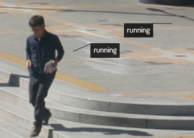

A little about me...
- I am in this course to learn more about web design because what I know so far has many gaps and I haven't used it in a formal environment.
-
I have created a few different websites for hackathons, class projects
and personal use but they have not been great in my opinion. Here are
two examples of what I've created.
-
Hands-on!
:
A Hackaton concept that mimicked linked in but catered to matching POC students and POC owned business.The website also provides a directory of POC owned business in metro areas with an interactive, searchable map. At the time, only Dallas is working but this was only a concept for a hackaton. -
Spanish
345: Latinx Digital Cultures
:
A Class project that focuses on the impact of Covid on Latinx populations in the largest metro areas of the United States. It contains interactive maps and tables for users to explore the data that I scraped as well as a resource center to download and access the source of the data collected.
-
Hands-on!
:
- In this course, I want to get a formal understanding of the web development process as well as dive into the backend implementation of code because in order to create the class website listed above, I had to use python packages to create the maps and charts and then exported them into HTML, json and JS files to be displayed. It was very difficult to do with my limited understanding so I hope to be able to replicate something similar in an easier and more effective way.
-
Learn Computing!
-
Advanced Command Line:
This command line tutorial goes more in depth than the shorter tutorial. One thing this course taught me was about the
pwdcommand that prints the current directory. Other useful commands like 'lsto list the directory andcdto change directory are also shown. A bit more advanced commands likemkdir,touchandvim/nanoare shown as a way to create and edit directories and files. -
How to use APIs:
The activity explains how to use APIs to request and obtain data. First, a simple example is shown through a URL that can be visited in a browser. Then, Postman is used to demonstrate a tool that can also be used to further explore the capability of APIs. Then, its shown how to get data using requests through Postman by filling in specific query information.
-
Advanced Command Line:
-
Critical Web Design Examples
-
Exhausting a Crowd
:
Exhausting a Crowd is a website that shows the little things happening around us. I am not sure if users or the website it self tags different tasks happening around the world through pre-recorded video from webcams in various different cities. Its quite interesting because it shows the likely possibility of AI and surveillance programs working together.
 -
ScareMail
:
ScareMail is an extension that generates text through NLP in order to trick NSA surveillance programs into looking deeper at the emails being sent. The program focuses on putting more stain on the NSAs program in order to combat government surveillance.

-
FloodNet
:
I first heard of FloodNet and the Electronic Disturbance Theater in my SPA 345 Latinx Digital Cultures class. We spoke briefly about Ricardo Dominguez's various attempts to disturb government surveillance and interrupt other online government activities. The FloodNet program was introduced in the late 1990s in order to perform an online sit-in in favor of the Zapatista rebels. It acted as modern day DDOS attack. The interesting part is the work the EDT is doing against what they see as injustices and how they created an online sit-in.

-
Exhausting a Crowd
:
Exhausting a Crowd is a website that shows the little things happening around us. I am not sure if users or the website it self tags different tasks happening around the world through pre-recorded video from webcams in various different cities. Its quite interesting because it shows the likely possibility of AI and surveillance programs working together.